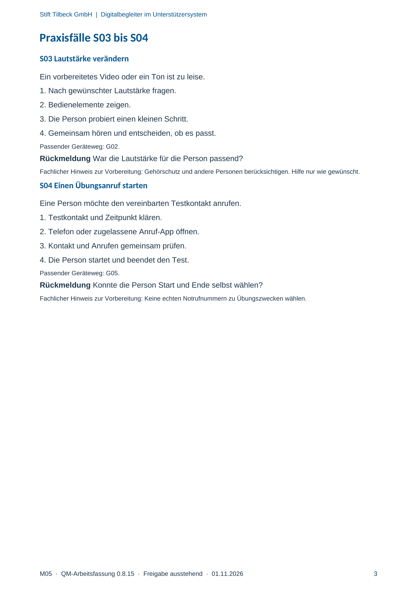

M05 · Originalseite 3
Lautstärke verändern
Original-Druckseite mit S03. Auf derselben Seite stehen außerdem S04. Diese sind dadurch keine zusätzliche Aufgabe.
Fragen und Ankreuzfelder werden auf dem Ausdruck bearbeitet. Die Lesefassung speichert keine Antworten.
Lesefassung · Seite 3
Stift Tilbeck GmbH | Digitalbegleiter im Unterstützersystem
M05 · QM-Arbeitsfassung 0.8.15 · Freigabe ausstehend · 01.11.2026 3
Praxisfälle S03 bis S04
S03 Lautstärke verändern
Ein vorbereitetes Video oder ein Ton ist zu leise.
1. Nach gewünschter Lautstärke fragen.
2. Bedienelemente zeigen.
3. Die Person probiert einen kleinen Schritt.
4. Gemeinsam hören und entscheiden, ob es passt.
Passender Geräteweg: G02.
Rückmeldung War die Lautstärke für die Person passend?
Fachlicher Hinweis zur Vorbereitung: Gehörschutz und andere Personen berücksichtigen. Hilfe nur wie gewünscht.
S04 Einen Übungsanruf starten
Eine Person möchte den vereinbarten Testkontakt anrufen.
1. Testkontakt und Zeitpunkt klären.
2. Telefon oder zugelassene Anruf-App öffnen.
3. Kontakt und Anrufen gemeinsam prüfen.
4. Die Person startet und beendet den Test.
Passender Geräteweg: G05.
Rückmeldung Konnte die Person Start und Ende selbst wählen?
Fachlicher Hinweis zur Vorbereitung: Keine echten Notrufnummern zu Übungszwecken wählen.
Originalseite ansehen
